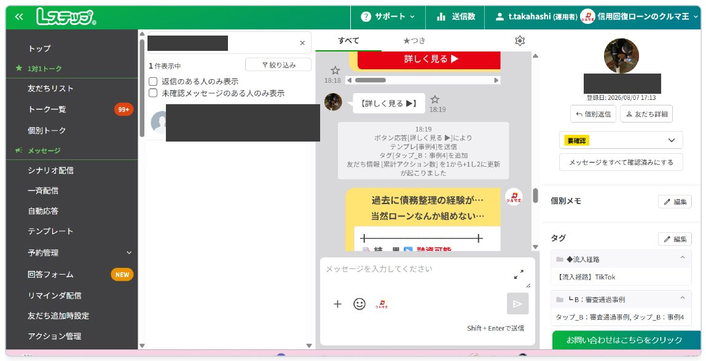
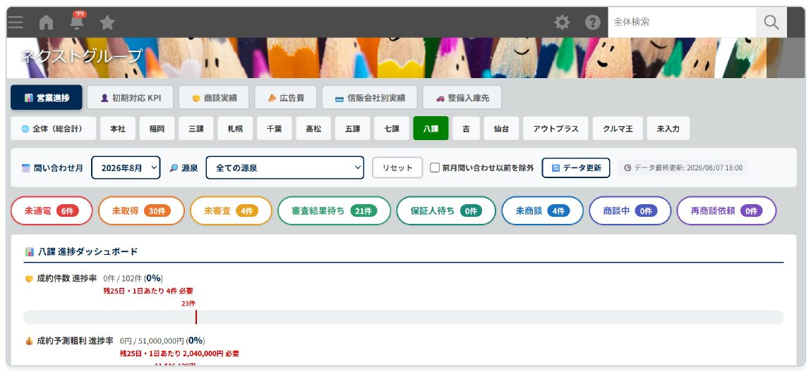

単元5
ツールとkintone入力
この単元のゴール案
kintoneに正しく入力できる
含む内容：使うツール、kintoneの入力ルール
2-2使うツール
- 2-2-1
ID・パスワードは「アカウント情報一覧（取扱注意）」で管理し、アカウントは一人ずつ発行する。共有IDにしない 案
- 2-2-2
LINE公式・Lステップ：お客様とのやり取り、フォームの確認、定型文の送信

図2-Cレコード詳細。名前をコピーし、源泉を確かめる 
図2-DLステップの個別トーク。名前で検索し「友だち詳細」で回答を見る - 2-2-3

図2-Akintoneのダッシュボード。上部の部署タブを選ぶ 
図2-B「問い合わせ」の絞り込み。「初期対応 担当」を自分にして「適用」 - 2-2-4
審査サイト：プレミア（P-Gate）・USS・リローン・ICT（3章）
- 2-2-5
車探し：ネクステージストック、アイオーク（九州レンタで同時3名まで）、JUナビ（出品歴の確認）
- 2-2-6
電子サイン：クラウドサイン（4章）
- 2-2-7
社内連絡：Chatwork、社内LINEグループ
- 2-2-8
無料のAIにお客様情報を貼らない。住所の整形などにAIを使うときは、Google WorkspaceのGeminiだけを使う
2-3kintone入力ルール
- 2-3-1
「kintoneに書いていない＝やっていない」。案件の動きはそのつどkintoneに残す
- 2-3-2
入力のタイミング 図2-E
- 架電の前：「対応店舗」「初期対応担当」
- 通電したら：通電日
- 案内不要と言われたら：「商談前失注 判定日」「商談前失注 理由」を入れてクローズ
- 情報が取れたら：情報取得日
- 審査したら：審査履歴に、審査担当、車種、年式、走行距離、審査金額、審査日、審査信販会社、審査結果、可決日、可決金額
- 送客対象外なら：「無効」にチェックし、理由を書いてクローズ

図2-Ekintoneの初期対応の入力欄（初期対応担当・通電日・無効・商談前失注など） - 2-3-3
審査結果の選び方：可決／否決。保証人が条件なら「保証人待ち」（空白にしない）。プレミアは「単独可決」か「シフト可決」、USSは「120以上可決」か「120未満可決」（可決金額は回答どおり）、その他は「可決」
- 2-3-4
入力形式：ふりがなは姓と名を全角スペースで区切る／生年月日はyyyy-mm-dd／携帯番号はハイフンなし11桁／郵便番号はハイフンなし7桁／年式は西暦4桁
- 2-3-5
注意
- 同姓同名・同一人物が別の源泉や部署で出ることがある。開く前に源泉と名前を必ず確認する
- 自動連携で別の店舗名が入っていることがある。対応店舗が正しいか確認する
- 審査担当は必ず入れる
- ダッシュボードで毎日自分の数字を確認する
- 2-3-6
低与信チームの集約シートを固定し、1つの入力で全ての資料が出るようにする（石丸さん・渡部社長・長野さんで構築中）
教育担当者のチェック
押すと印が付きます。この端末のブラウザにだけ保存されます。正式な記録は印刷したチェックリストに書いてください。